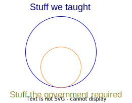
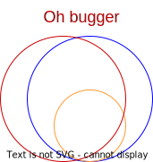
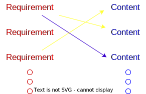

Not your typical rag app
Hi, I'm Sheena
🧗â€â™€ï¸ğŸ•ï¸ğŸ§ğŸ‡¿ğŸ‡¦ğŸ–Šï¸ğŸ› ï¸ğŸ”¥ğŸ•ğŸ¸ğŸ™ƒ
|
 |
And now?
Building tools/systems to help tech educators with their trickiest problemsEnough!
Let's talk about RAGsThere was a small problem
SA government is remixing qualification standards
We had a course already
Now...
Needed to
- Map new requirements onto existing syllabus
- => figure out what content to develop
- => see what we can strip out
Doing this by hand is not ...lekker...
- Our syllabuses have > 1000 separate files
- 900ish new requirements just for one course
Can we hit it with a RAGish app?

Sortof...
The plan
- Load our syllabus into a vector database
- Search for each outcome to map it to different syllabus items
- Find out where the gaps are and what we can cull!
Sounds easy enough...

🥲
Ok but how?
- Run the database locally in a docker container
- Embed syllabus content and store as vectors âš ï¸
- Which embedding model?
- To chunk or not to chunk?
- Iterate over the outcomes and search âš ï¸
- Distance calculation?
- Threshold?
Output
Clean up
for (requirement, content) in mappings:
ask_an_llm("do these really go together?")
Challenges
- Few iterations of prompt engineering
- Couldn't get a clear yes/no => Needed a yes/no/maybe
- Content big(ish) => lots of tokens
- Rate limits => took a while
In the end...
- Still needed a human to look at the "maybes"
- Still needed a human to look at the "maybes"